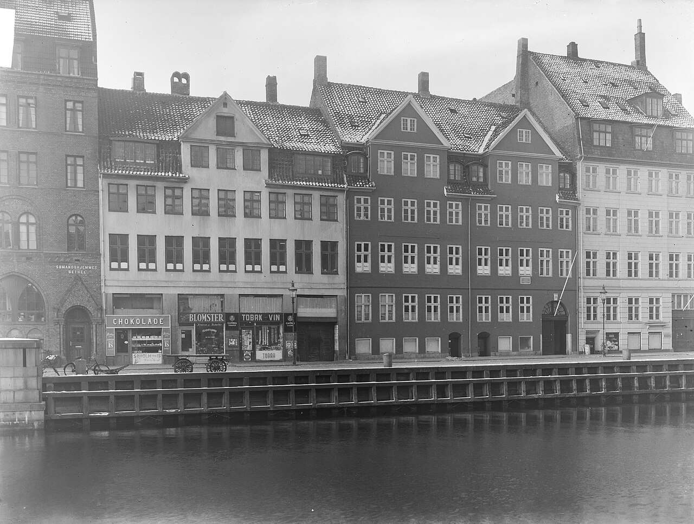

Дания

Дания — это хюгге в национальном масштабе: страна, где счастье измеряют в свечах и кашеминовых пледах. Копенгаген начинается с Нюхавна — гавани с разноцветными домами, в которых жил сказочник Андерсен; теперь здесь кофе лучше, чем в сказках. Парк Тиволи в центре города работает с 1843 года: старые качели, иллюминация и духовой оркестр — ностальгия в промышленных масштабах. Велосипеды здесь — основной транспорт, и вы за день привыкнете к тому, что три возраста и две собаки едут рядом с вами по выделенной дорожке. Свободный город Христиания — отдельная республика с флагами и правилами; заходите с открытыми глазами, но без телефона в руке. Музеи хорошие: корабли викингов в Роскилле — настоящие корпуса, под которых вы просунете голову с уважением. Кухня: смёрребред на ржаном, открытые сэндвичи как малые картины, и кондитерские с булочками с корицей, свежими с утра. Вечером — сауна на пирсе с заходом прямо в гавань, если наберётесь смелости.
Что знать перед поездкой
- Тиволи — вечером, на подсветке
- Велосипед напрокат — и вы местный за час
- Смёрребред заказывайте набор — попробуете сразу пять